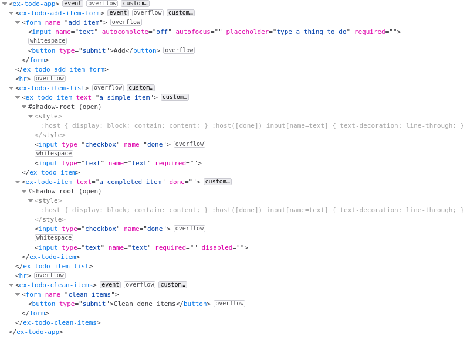

<ceb/> ~ Custom Element Builder
<ceb/> is a library helping to develop Custom Elements (v1).
Its core is a builder which executes others builders.
By this way, <ceb/> is natively opened to extensions and builders easily sharable.
A simple Custom Element displaying a greeting text:
See the Pen <ceb/> ~ SimpleGreeting by Thibault Morin (@tmorin) on CodePen.
<ceb/> is released under the MIT license.
The source code is available on GitHub: github.com/tmorin/ceb.
Installation
From npm or yarn or ... from npm what?
npm install @tmorin/ceb
And also directly in the browser via unpkg.com
<!-- the optimized Universal Module Definition -->
<script src="https://unpkg.com/@tmorin/ceb/dist/ceb.min.js"></script>
<!-- the not optimized Universal Module Definition -->
<script src="https://unpkg.com/@tmorin/ceb/dist/ceb.js"></script>
Builders and decorators
<ceb/> provides several built-in builders handling the common requirements.
Firstly, the custom element has to be registered using the builder ElementBuilder.
Then, other builders can be used to enhance it:
- AttributeBuilder: to define attributes and react on changes
- FieldBuilder: to define fields (property/attribute) and react on changes
- OnBuilder: to listen to DOM events
- ContentBuilder: to initialize the light or shadow DOM
- TemplateBuilder: to path the DOM of the custom element
- ReferenceBuilder: to get reference of children nodes
- AttributePropagationBuilder: to delegate attribute mutations to child nodes
- PropertyDelegationBuilder: to delegate the property accesses to a single child node
ElementBuilder
The class ElementBuilder provides services to enhance and register a Custom Element.
It's the main builder, the entry point of the library.
The reference documentation is there: ElementBuilder.
Challenge yourself
Will you be able to ...
- change the tag name to
<my-greeting></my-greeting>without changing the class name? - transform
SimpleGreetingas an extension ofh1, so that can be created with<h1 is="my-greeting"></h1>? the class ofh1isHTMLHeadingElement
See the Pen <ceb/> ~ challenge/ElementBuilder by Thibault Morin (@tmorin) on CodePen.
Define a regular Custom Element
import {ElementBuilder} from "@tmorin/ceb"
// defines and register the custom element class
@ElementBuilder.get().decorate()
class SimpleGreeting extends HTMLElement {
constructor(public name = "World") {
super();
}
connectedCallback() {
this.textContent = `Hello, ${this.name}!`
}
}
Once registered, the Custom Element can be created with three different styles: markup, Object-Oriented and, hybrid.
The first one relies on the tag name of the Custom Element within the markup of an HTML document.
document.body.innerHTML = `<simple-greeting></simple-greeting>`
The second one relies on the Object-Oriented nature of the Custom Element. Basically, the class can be instantiated, and the created object can be then append to the DOM.
const helloJohn: SimpleGreeting = new SimpleGreeting("John")
document.body.appendChild(helloJohn)
The last one lies between the markup and OO style.
const helloDoe: SimpleGreeting = document.createElement("simple-greeting")
helloDoe.name = "Doe"
document.body.appendChild(helloDoe)
Define an extension of a native Element
import {ElementBuilder} from "@tmorin/ceb"
// defines and register the custom element class
@ElementBuilder.get().extends("p").decorate()
class SimpleGreetingParagraph extends HTMLParagraphElement {
constructor(public name = "World") {
super();
}
connectedCallback() {
this.textContent = `Hello, ${this.name}!`
}
}
Once registered, the Custom Element can be created like the regular one. However, because of the extension of a native Element, the creation expects additional information.
The creation with the markup style:
document.body.innerHTML = `<p is="simple-greeting-paragraph"></p>`
The creation with the Object-Oriented style:
const helloJohn: SimpleGreetingParagraph = new SimpleGreeting("John")
document.body.appendChild(helloJohn)
The creation with the hybrid style:
const helloDoe: SimpleGreetingParagraph = document.createElement("p", {
extends: "is"
})
helloDoe.name = "Doe"
document.body.appendChild(helloDoe)
AttributeBuilder
The builder handles the initialization of an attribute as well as the registration of its listeners.
The reference documentation is there: AttributeBuilder.
Challenge yourself
Will you be able to ...
- display
Hello, Joen Doe!just setting the attributename? - change the attribute name to
alt-namewithout changing the method name?
See the Pen <ceb/> ~ challenge/AttributeBuilder by Thibault Morin (@tmorin) on CodePen.
FieldBuilder
The builder binds a property to an attribute. So that, the value is available and mutable from both sides.
The reference documentation is there: FieldBuilder.
Challenge yourself
Will you be able to ...
- display
Hello, Joen Doe!just setting the propertyname? - change the attribute name to
alt-namewithout changing the property name?
See the Pen <ceb/> ~ challenge/FieldBuilder by Thibault Morin (@tmorin) on CodePen.
FieldBuilder
The builder handles the addition and removal of DOM event listeners.
The reference documentation is there: OnBuilder.
Challenge yourself
Will you be able to ...
- display
Hello, World!only when theclickevent comes from abutton? c.f. Event Delegation ;) - display
Hello, World!only on double click? there is a native event for that ;)
See the Pen <ceb/> ~ challenge/OnBuilder by Thibault Morin (@tmorin) on CodePen.
ContentBuilder
The builder handles the initialization of the HTML content of the Custom Element.
The reference documentation is there: ContentBuilder.
Challenge yourself
Will you be able ...
- to display
Hello, Joen Doe!? - to render into a Shadow DOM?
See the Pen <ceb/> ~ challenge/ContentBuilder by Thibault Morin (@tmorin) on CodePen.
TemplateBuilder
The builder handles the integration of a templating solution to update the content of the Custom Element.
The reference documentation is there: TemplateBuilder.
Challenge yourself
Will you be able to ...
- display
Hello, John Doe!calling therendermethod? - render into a Shadow DOM?
- render into a Grey DOM?
See the Pen <ceb/> ~ challenge/TemplateBuilder by Thibault Morin (@tmorin) on CodePen.
ReferenceBuilder
The builder enhances a readonly property to execute a CSS Selector once the property is get. So that, a property of the Custom Element can always be related to a child element or a set of child elements.
The reference documentation is there: ReferenceBuilder.
Challenge yourself
Will you be able to ...
- implement the method
sayHelloJohnDoe()to displayHello, Johne Doe!?
See the Pen <ceb/> ~ challenge/ReferenceBuilder by Thibault Morin (@tmorin) on CodePen.
AttributePropagationBuilder
The builder handles the propagation of an attribute's values to embedded elements. That means, each time the attribute is mutated, the mutation is propagated to selected child nodes.
The reference documentation is there: AttributePropagationBuilder.
Challenge yourself
Will you be able to ...
- propagate the value of the attribute
valueto the propertyplaceholderof theinput? - propagate the value of the attribute
frozento the attributedisabledof theinput?
See the Pen <ceb/> ~ challenge/AttributePropagationBuilder by Thibault Morin (@tmorin) on CodePen.
PropertyDelegationBuilder
The builder delegates the accesses of a property to an embedded element.
The reference documentation is there: PropertyDelegationBuilder.
Challenge yourself
Will you be able to ...
- delegate the property
valueto the attributeplaceholderof theinput? - delegate the property
frozento the propertydisabledof theinput?
See the Pen <ceb/> ~ challenge/PropertyDelegationBuilder by Thibault Morin (@tmorin) on CodePen.
Templating
<ceb/> provides a built-in solution for templating which can be directly used with the TemplateBuilder.
The solution relies on a built-in engine which patches the DOM incrementally. The implementation and the underlying APItemplating is similar to incremental-dom. The main difference is the full support of Custom Elements, especially the handling of a Grey DOM.
Its main API is a Tagged Templates. Its usage is cover in the Template literal section.
The Light, Grey and Shadow DOMs
When a Custom Element is responsible for a part of its child nodes, the usage of Shadow DOM is welcoming. Shadow DOM handles the HTMLSlotElement elements which can be used as placeholders. However, Shadow DOM brings a level of isolation which is not always welcome. Especially for the shadowified markup which relies on common stylesheets.
The built-in template engine provides a solution to handle Grey DOM. The purpose is to keep the concept of slot coming from Shadow DOM but in the Light DOM. Therefore, the DOM tree between the Custom Element node, and the slot node becomes a Grey DOM.
Basically, a Grey DOM can only be mutated from its Custom Element and, the Custom Element can only mutate its Grey DOM.
Moreover, like for the Shadow DOM, the Grey DOM handles kind of <slot> elements to manage the placeholders.
However, the Grey DOM is not isolated from the Light DOM context (javascript, styles ...).
For senior JS developers :), it is similar to the transclude concept implemented in AngularJS.
Template literal
The built-in template solution provides an API to express templates based on Template literal.
The API is the Tagged Templates html.
The reference documentation is there: html.
Common usages
Text
Write the content Hello, World! in the <p> element:
import {html, Template} from "@tmorin/ceb"
const name = "World"
const template: Template = html`<p>Hello, ${name}!</p>`
Attribute
Set the value foo to the attribute bar:
import {html, Template} from "@tmorin/ceb"
const value = "foo"
const template: Template = html`<input bar="${value}">`
Set boolean values, the checked attribute won't be rendered because its value is false:
import {html, Template} from "@tmorin/ceb"
const checked = false
const template: Template = html`<input required disabled="" checked="${checked}">`
Property
Set the value foo to the property bar:
import {html, Template} from "@tmorin/ceb"
const value = "Foo"
const template: Template = html`<input p:bar="${value}">`
Prevent extra processing
The special attribute o:skip, notifies the template engine that the children of the element should not be processed.
import {html, Template} from "@tmorin/ceb"
const template: Template = html`<div><ul o:skip></ul></div>`
When rendering within a Shadow DOM, the usage of the element <slot> have the same effect: the children of the slot element won't be processed.
Optimize patch activities
The special attribute o:key, notifies the template engine that the current node can be identified by a key.
The key can be of any types.
The feature should be used when rendering a dynamic list where the items can be added/removed/shift.
For each item, the o:key should be provided.
So that, the engine will be able to efficiently discover the related DOM nodes.
import {html, Template} from "@tmorin/ceb"
const lis = ["item A", "item B"].map(item => hmtl`<li o:key="${item}">${item}</li>`)
const template: Template = html`<div><ul>${lis}</ul></div>`
When rendering within a Shadow DOM, the usage of the element <slot> have the same effect: the children of the slot element won't be processed.
Grey DOM
The special element <ceb-sot></ceb-slot> is the marker of the placeholder.
Given the following Custom Element with template expressed using the literal approach:
import {ElementBuilder, TemplateBuilder, html, Template} from "ceb"
class HelloWorld extends HTMLElement {
render(): Template {
return html`<p>Hello, <ceb-slot></ceb-slot>!</p>`
}
}
ElementBuilder.get().builder(TemplateBuilder.get().parameters({
greyDom: true // activate the Grey DOM feature
})).register()
When the following statement is created and rendered:
<hello-worlder>John Do</hello-worlder>
Then the Light DOM becomes:
<hello-worlder>
Hello, <ceb-slot>John Doe<ceb-slot>!
</hello-worlder>
Examples
The Git Repository provides examples to demonstrate the usage of <ceb/> features:
- ex-greeting : a simple Custom Element to display a greeting message
- ex-form-field : a simple Custom Element to wrap form controls
- ex-todo : a simple application to manage a list of todo items.
ex-greeting
The source code of the implementation and, the test of this example are available in the Git repository
of <ceb/> : examples/ex-greeting.
This example demonstrates how to leverage on some builders and decorators to create a Custom Element which displays a greeting message.
Initiate the Custom Element class
The Custom Element ex-greeting is a regular ES6 class which extends HTMLElement :
export class ExGreeting extends HTMLElement {
}
Register the Custom Element
To register ex-greeting, the decorator @ElementBuilder.element is used:
import {
ElementBuilder
} from "ceb";
@ElementBuilder.get().decorate()
export class ExGreeting extends HTMLElement {
}
Initialize the Shadow DOM
To Shadow DOM of ex-greeting is initialized with the decorator @ContentBuilder.content is used :
import {
ElementBuilder,
ContentBuilder
} from "ceb";
@ElementBuilder.get().decorate()
@ContentBuilder.get(`<p>Hello, <span id="name"></span>!</p>`)
.shadow()
.decorate()
export class ExGreeting extends HTMLElement {
}
Capture the name
The target of the greeting is capture with the field name using the decorator FieldBuilder.field :
import {
ElementBuilder,
ContentBuilder,
FieldBuilder
} from "ceb";
@ElementBuilder.get().decorate()
@ContentBuilder.get(`<p>Hello, <span id="name"></span>!</p>`)
.shadow()
.decorate()
export class ExGreeting extends HTMLElement {
@FieldBuilder.get().decorate()
name: string = "World"
}
Update the Shadow DOM with the captured name
Each time the field name mutates, the element selected by span#name has to be updated with the new value.
There are two ways to handle it with the built-in <ceb/> builders : the craft style and the delegated one.
The craft style
The decorator ReferenceBuilder.reference retrieves the reference of the element span#name.
import {
ElementBuilder,
ContentBuilder,
FieldBuilder,
ReferenceBuilder
} from "ceb";
@ElementBuilder.get().decorate()
@ContentBuilder.get(`<p>Hello, <span id="name"></span>!</p>`)
.shadow()
.decorate()
export class ExGreeting extends HTMLElement {
@FieldBuilder.get().decorate()
name: string = "World"
@ReferenceBuilder.get()
.shadow()
.selector("span#name")
.decorate()
span: HTMLSpanElement
}
Finally, the decorator FieldBuilder.listen handles the mutation of the field name to
import {
ElementBuilder,
ContentBuilder,
FieldBuilder,
ReferenceBuilder,
} from "ceb";
@ElementBuilder.get().decorate()
@ContentBuilder.get(`<p>Hello, <span id="name"></span>!</p>`)
.shadow()
.decorate()
export class ExGreeting extends HTMLElement {
@FieldBuilder.get().decorate()
name: string = "World"
@ReferenceBuilder.get()
.shadow()
.selector("span#name")
.decorate()
span: HTMLSpanElement
@FieldBuilder.get().decorate()
private onName(data: FieldListenerData) {
this.span.textContent = data.newVal
}
}
The delegated fashion
Alternatively, the decorator AttributePropagationBuilder.delegate can be used to automatically binds the mutation of the field name to the property textContent of the selected element span#name :
import {
ElementBuilder,
ContentBuilder,
FieldBuilder,
AttributePropagationBuilder
} from "ceb";
@ElementBuilder.get().decorate()
@ContentBuilder.get(`<p>Hello, <span id="name"></span>!</p>`)
.shadow()
.decorate()
@AttributePropagationBuilder.get("name")
.shadow()
.to("span#name")
.property("textContent")
export class ExGreeting extends HTMLElement {
@FieldBuilder.get().decorate()
name: string = "World"
}
ex-form-field
The source code of the implementation and, the test of this example are available in the Git repository of <ceb/> : examples/ex-form-field.
This example demonstrates how to leverage on some builders and decorators to create a custom element able to wrap form elements with a label and, a helper text. Both fields can be accessed and mutated with the respective attributes and properties. Additionally, when the user clicks on the label element, the focus is dynamically propagated to the first focusable wrapper elements.
For instance the following snippet wrap an input text with the label Firstname and the helper text The firstname of your name. :
<ex-form-field label="Firstname" helper="The firstname of your name.">
<input type="text" name="firstname" value="foo" required="" />
</ex-form-field>
With Mozilla Firefox, the initial Flatten DOM related to the Custom Element looks like :

The Custom Element ex-form-field involves the following native <ceb/> builders :
| Builders | Comment |
|---|---|
ElementBuilder | The builder registers the Custom Element. |
ContentBuilder | The builder is used as a decorator and define the content of the Custom Element's Shadow DOM at its creation. |
FieldBuilder | The builder is used as a decorator to define the two Custom Element's API items: the label and the helper text. |
AttributePropagationBuilder | The builder is used as a decorator to delegate the mutations of the API items (i.e. the label and the helper text) to the respective DOM elements. |
OnBuilder and ReferenceBuilder | Both builders are used to react on click event on the label element in order to delegate the focus to the first focusable wrapped form control. |
ex-todo
The source code of the implementation and, the test of this example are available in the Git repository of <ceb/> : examples/ex-todo.
This example demonstrates how to implement an application managing a simple list of todo item with Custom Element and the native <ceb/> builders
| Custom Element | Comment |
|---|---|
ex-todo-app | Displays the application and handles the commands ex-todo-add-item and ex-todo-clean-items |
ex-todo-add-item-form | Displays a form to submit items. On submissions the Custom Event ex-todo-add-item is dispatched. |
ex-todo-clean-items | Displays a form to trigger the cleaning of completed items. On submissions the Custom Event ex-todo-clean-items is dispatched. |
ex-todo-item-list | Displays a list of ex-todo-item |
ex-todo-item | Displays a form to mutate the content and status of an item. |
For instance the following snippet instantiates the application :
<ex-todo-app></ex-todo-app>
Right after its instanciation, the initial Flatten DOM looks like :

After the creation of two items where one is flagged as "completed", then the application looks like :

And the respective Flatten DOM looks like :
